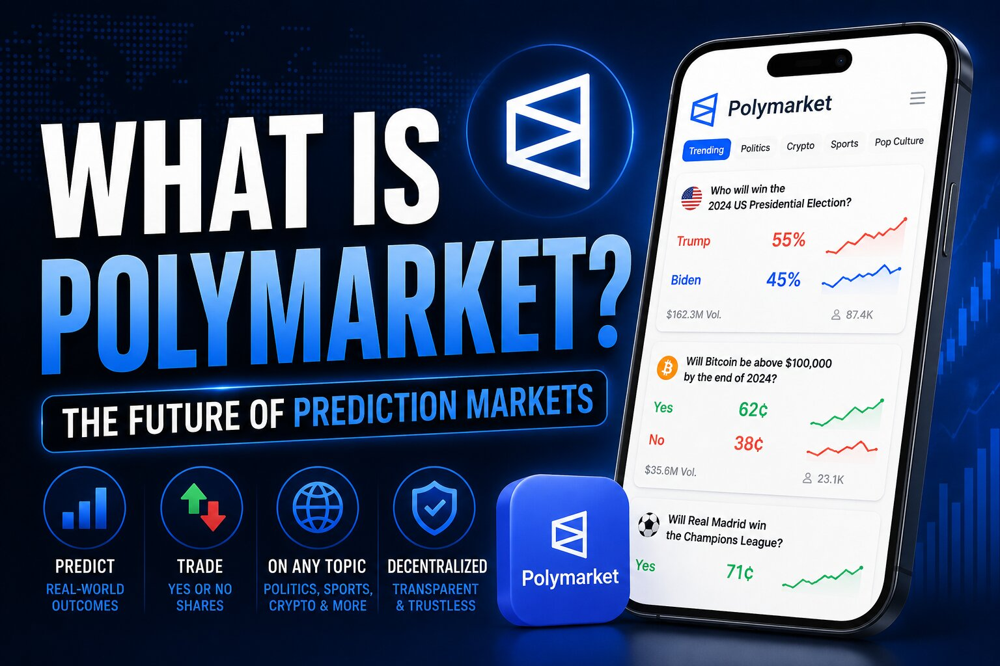

What Is Polymarket? Inside the World's Largest Prediction Market

The one-sentence version
Polymarket is a blockchain-based exchange where you buy and sell shares tied to the outcome of real events — a Bitcoin price threshold, an election, a war's next move — and each share settles at $1.00 if it comes true or $0.00 if it doesn't. Unlike Kalshi, it grew up outside the US financial system entirely, got kicked out of the country in 2022, and only fought its way back in late 2025 through an acquisition rather than a slow application process.
Where it came from
Shayne Coplan founded Polymarket in June 2020 out of New York City, though the company's legal domicile sits in Panama. From the start it was built on Polygon, a blockchain network, with all trading funded in USDC, a dollar-pegged stablecoin. Instead of a company-run order book deciding who's right, Polymarket originally leaned entirely on crypto infrastructure: a hybrid system where trades are matched off-chain for speed but settled on-chain through smart contracts, and where market outcomes are decided by the UMA optimistic oracle — anyone can propose a resolution, and if someone disputes it, token holders vote on the correct answer. There's no in-house judge.
The market that made it famous
Polymarket's defining moment was the 2024 US presidential race. Its "Will Donald Trump win?" market opened back in 2023 with Trump shares trading around 40 cents, implying a roughly 40% chance. Through the primaries the price bounced in a 45-to-55-cent range. After the June 2024 debate between Joe Biden and Donald Trump, widely seen as a poor showing for Biden, Trump's shares jumped into the high 60s. By the days before the election, Polymarket's implied probability for Trump had climbed past 60%, while several major polling-based models still showed the race as close to a toss-up. Over $3.3 billion was wagered on that single market by election day, and the fact that Polymarket's pricing tracked closer to the actual result than a lot of polling aggregators drove a wave of mainstream attention the platform hadn't had before.
How to actually use it, and the two-platform split
Today there are effectively two separate Polymarket experiences. The global platform is the original crypto-native version: non-custodial, funded with USDC on Polygon, resolved through the UMA oracle, with no cap on position size — which is why large individual traders have been able to place eight-figure bets on it. Polymarket US, run through a subsidiary called QCX LLC, is a different animal: it requires full identity verification, settles in US dollars through normal bank rails like ACH and debit cards, and follows standard CFTC derivatives rules including CFTC-set position limits. Signing up takes about ten minutes if you already hold crypto for the global site, or about thirty minutes for a first-time US user going through KYC on Polymarket US.
What it costs to trade
Polymarket ran fee-free for most of its history, funding itself instead through yield on the enormous pool of USDC sitting in its markets and through data licensing deals. That changed starting January 2026, when the platform began rolling out taker fees — first on crypto markets, then select sports markets in February, then a broader schedule in March. On the global platform, only takers (people who fill an existing order immediately) pay; makers who place limit orders and wait pay nothing. The fee is highest around a 50-cent price, where uncertainty is greatest, and fades to nearly zero near 1 cent or 99 cents. Reported peak rates by category: about 1.80% on crypto, 1.50% on economics, 1.00% on politics, 0.75% on sports, and 0% on select geopolitics markets. Polymarket US runs a simpler, flat 0.30% taker fee with a 0.20% maker rebate.
Getting banned, and the road back
Polymarket's relationship with US regulators has been genuinely rocky. In January 2022 the CFTC fined the company $1.4 million for running an unregistered derivatives platform and forced it to block American users entirely — a ban that lasted roughly three years. In late 2024, federal agents raided CEO Shayne Coplan's home as part of a broader investigation; the charges were dropped about seven months later following a change in presidential administration. The turnaround came in July 2025, when the CFTC and Department of Justice formally closed their investigations without new charges, and Polymarket immediately acquired QCEX — an already CFTC-licensed derivatives exchange and clearinghouse — for $112 million. That purchase let Polymarket skip years of independent licensing and secure a CFTC Amended Order of Designation by November 2025, clearing the way for a regulated US mobile app that launched in December 2025.
How big it's actually gotten
The volume numbers describe a platform that scaled unusually fast. Total trading volume was about $73 million in 2023, then roughly $9 billion in 2024 — better than a hundredfold jump in a single year, driven heavily by the election. Monthly volume peaked around $10.5 billion in March 2026. By June 2026, Polymarket's US arm alone was processing more than $3.5 billion in monthly notional volume, up from $1.77 billion in May, while the international platform set a fresh monthly record near $10.8 billion, boosted by trading tied to the 2026 FIFA World Cup — that single tournament reportedly drew about $2.5 billion in wagers in its first eleven days. Sports has since overtaken politics as the platform's largest category by volume, at roughly 39–40% of the total, with politics around 32% and crypto around 20%. In October 2025, the exchange operator ICE invested up to $2 billion into Polymarket, valuing the company at around $8 billion; by February 2026 that valuation had climbed to roughly $9 billion.
The uncomfortable stories that come with real-money markets on real events
Letting people bet on live conflicts and geopolitics has produced some genuinely uncomfortable episodes. A newly created account reportedly earned more than $400,000 in January 2026 from positions tied to Nicolás Maduro's ouster and US military action in Venezuela, placed before the operation became public — a US Special Forces soldier was later arrested and charged in connection with the trades. During the 2026 Iran war, close to $850,000 was wagered on a nuclear-detonation market that Polymarket pulled shortly after most of the bets were placed. Multiple members of the Israeli Air Force were investigated or indicted over allegedly using advance knowledge of strike timing to trade related markets, in cases involving roughly $244,000 and $46,000 in gains. In one especially ugly incident, traders who had bet on the timing of a strike allegedly harassed a journalist covering the war in an attempt to influence his reporting and the market's resolution; Polymarket banned those involved and condemned the behavior, and press-freedom groups spoke out publicly against it.
Polymarket vs. Kalshi, in short
Kalshi is dollar-native from day one — bank transfers, debit cards, no crypto required — and has deeper liquidity on US economic and financial markets. Polymarket still runs on USDC and Polygon for its global platform, which means a crypto learning curve for newcomers, but it has broader international coverage and, historically, deeper liquidity on major political and geopolitical events. Both now face the same patchwork of state-level fights over whether their sports contracts count as gambling.
Disclaimer: This post is for informational purposes only and is not financial or legal advice. Prediction market trading carries real financial risk, availability and legal status vary by state and country and can change quickly, and cryptocurrency markets carry additional risks around custody and volatility. Do your own research before trading.